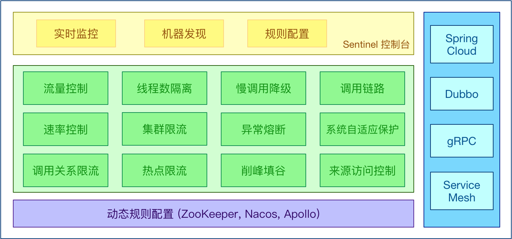
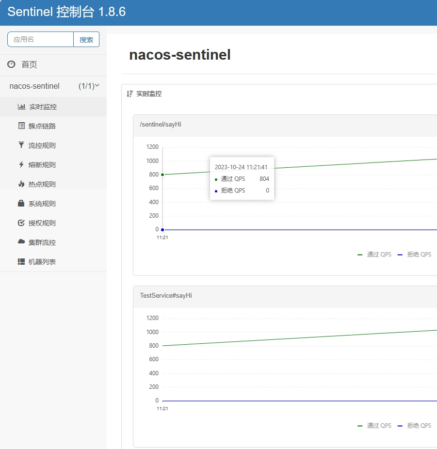
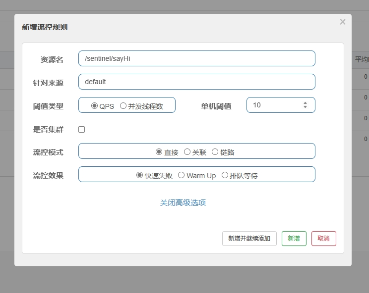
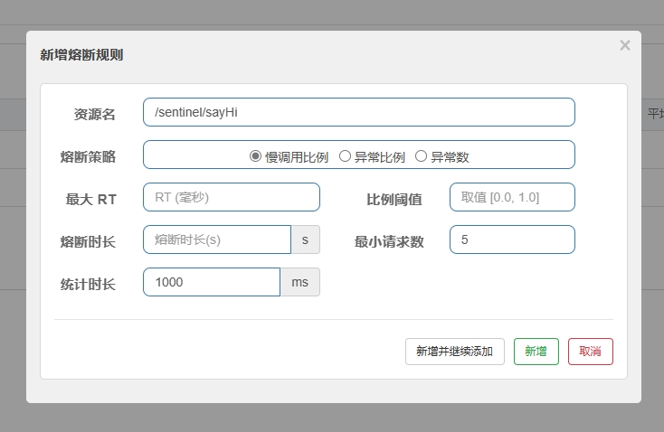
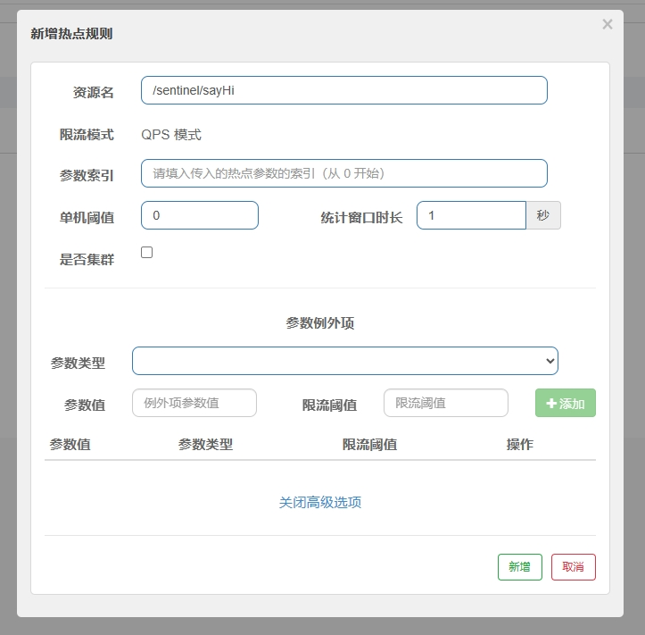
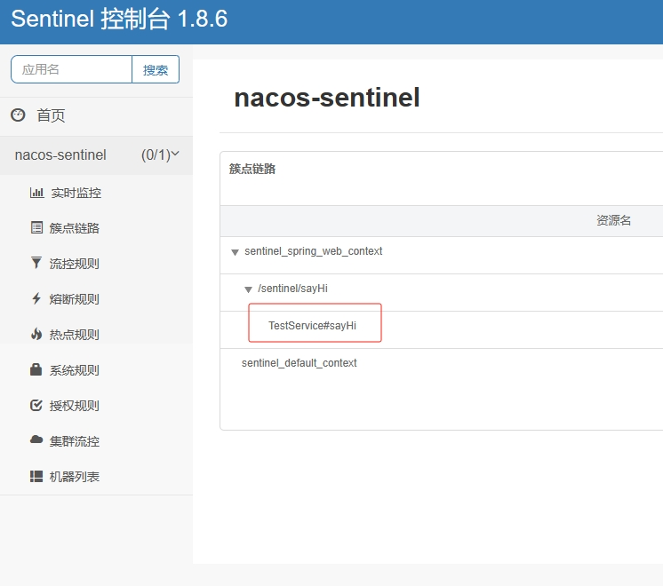
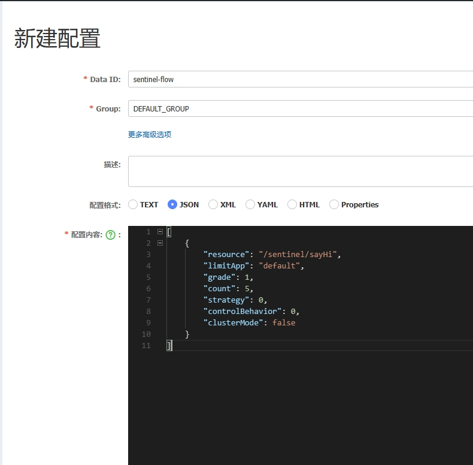

一、什么是Sentinel
Sentinel (分布式系统的流量防卫兵) 是阿里开源的一套用于服务容错的综合性解决方案。它以流量
为切入点, 从流量控制、熔断降级、系统负载保护等多个维度来保护服务的稳定性。
1、Sentinel 具有以下特征:
- 丰富的应用场景：
Sentinel 承接了阿里巴巴近 10 年的双十一大促流量的核心场景, 例如秒杀（即突发流量控制在系统容量可以承受的范围）、消息削峰填谷、集群流量控制、实时熔断下游不可用应用等。 - 完备的实时监控：
Sentinel 提供了实时的监控功能。通过控制台可以看到接入应用的单台机器秒级数据, 甚至 500 台以下规模的集群的汇总运行情况。 - 广泛的开源生态：
Sentinel 提供开箱即用的与其它开源框架/库的整合模块, 例如与 SpringCloud、Dubbo、gRPC 的整合。只需要引入相应的依赖并进行简单的配置即可快速地接入Sentinel。 - 完善的 SPI 扩展点：
Sentinel 提供简单易用、完善的 SPI 扩展接口。您可以通过实现扩展接口来快速地定制逻辑。例如定制规则管理、适配动态数据源等。
Sentinel的主要特征如下图：

2、Sentinel 分为两个部分:
- 核心库（Java 客户端）不依赖任何框架/库,能够运行于所有 Java 运行时环境，同时对 Dubbo / Spring Cloud 等框架也有较好的支持。
- 控制台（Dashboard）基于 Spring Boot 开发，打包后可以直接运行，不需要额外的 Tomcat 等应用容器。
3、启动Sentinel控制台
- 我们需要下载控制台jar包，下载地址：https://github.com/alibaba/Sentinel/releases
- 然后找到最新版本的jar,我目前最新的稳定版是：V1.8.6
- 下载：
sentinel-dashboard-1.8.6.jar - 然后就可以使用
java -jar sentinel-dashboard-1.8.6.jar来启动 - 默认用户名和密码都是
sentinel，可以再启动的时候，修改配置，环境变量配置如下：
| 配置项 | 类型 | 默认值 | 最小值 | 描述 |
|---|---|---|---|---|
| auth.enabled | boolean | true | - | 是否开启登录鉴权，仅用于日常测试，生产上不建议关闭 |
| sentinel.dashboard.auth.username | String | sentinel | - | 登录控制台的用户名，默认为 sentinel |
| sentinel.dashboard.auth.password | String | sentinel | - | 登录控制台的密码，默认为 sentinel |
| sentinel.dashboard.app.hideAppNoMachineMillis | Integer | 0 | 60000 | 是否隐藏无健康节点的应用，距离最近一次主机心跳时间的毫秒数，默认关闭 |
| sentinel.dashboard.removeAppNoMachineMillis | Integer | 0 | 120000 | 是否自动删除无健康节点的应用，距离最近一次其下节点的心跳时间毫秒数，默认关闭 |
| sentinel.dashboard.unhealthyMachineMillis | Integer | 60000 | 30000 | 主机失联判定，不可关闭 |
| sentinel.dashboard.autoRemoveMachineMillis | Integer | 0 | 300000 | 距离最近心跳时间超过指定时间是否自动删除失联节点，默认关闭 |
| sentinel.dashboard.unhealthyMachineMillis | Integer | 60000 | 30000 | 主机失联判定，不可关闭 |
| server.servlet.session.cookie.name | String | sentinel_dashboard_cookie | - | 控制台应用的 cookie 名称，可单独设置避免同一域名下 cookie 名冲突 |
修改环境变量修改示例如下：
# 其中server.port=8080 是启动端口，后面是账号和密码
java -Dserver.port=8080 -Dsentinel.dashboard.auth.username=rstyro -Dsentinel.dashboard.auth.password=123456 -jar sentinel-dashboard-1.8.6.jar启动之后然后访问：
http://localhost:8080即可访问控制台控制台更多稳定可查看官方文档：https://github.com/alibaba/Sentinel/wiki/
二、微服务整合Sentinel
- Springcloud 整合sentinel
1、引入sentinel依赖
- 在微服务下的客户端服务加入如下依赖
<dependency> |
2、配置控制台地址
- 如上引入依赖之后，配置控制台地址：
spring: |
- 之后启动服务，调用任意api接口，访问sentinel控制台即可看到接口的访问情况，可请求限流等操作
- sentinel 默认为所有的http端点提供了限流埋点
- 我们直接可以在控制台的
簇点链路给接口添加流控规则

3、流量控制
流量控制在网络传输中是一个常用的概念，它用于调整网络包的发送数据。然而，从系统稳定性角度考虑，在处理请求的速度上，也有非常多的讲究。任意时间到来的请求往往是随机不可控的，而系统的处理能力是有限的。我们需要根据系统的处理能力对流量进行控制。
流量控制（flow control），其原理是监控应用流量的 QPS 或并发线程数等指标，当达到指定的阈值时对流量进行控制，以避免被瞬时的流量高峰冲垮，从而保障应用的高可用性。
①、流控规则
- 可在控制台给接口添加流控规则，如下图

一条流控规则主要由下面几个因素组成，我们可以组合这些元素来实现不同的限流效果：
resource：资源名，即限流规则的作用对象
limitApp：流控针对的调用来源，若为
default则不区分调用来源grade：限流阈值类型（QPS 或并发线程数）；0代表根据并发数量来限流，1代表根据QPS来进行流量控制
count：限流阈值
strategy：调用关系限流策略,0表示直接,1表示关联,2表示链路;
- 直接： API达到限流条件时，直接限流，如果我们设置QPS为1，如果大于这个数量，直接返回错误。
- 关联： 当关联的资源达到阈值时，限流自己，比如A调用B，B达到了阈值，A进行限流。
- 链路： 只记录链路上的流量，指定对应的链路路径，从入口开始，如果达到阈值，则进行限流。
controlBehavior：流量控制效果（,0表示快速失败,1表示Warm Up,2表示排队等待）
- 直接拒绝：是默认的流量控制方式，当QPS超过任意规则的阈值后，新的请求就会被立即拒绝，拒绝方式为抛出
FlowException
- Warm Up：即预热/冷启动方式。当系统长期处于低水位的情况下，当流量突然增加时，直接把系统拉升到高水位可能瞬间把系统压垮。通过”冷启动”，让通过的流量缓慢增加，在一定时间内逐渐增加到阈值上限，给冷系统一个预热的时间，避免冷系统被压垮。
- 匀速排队：会严格控制请求通过的间隔时间，也即是让请求以均匀的速度通过，对应的是漏桶算法。是默认的流量控制方式，当QPS超过任意规则的阈值后，新的请求就会被立即拒绝，拒绝方式为抛出
FlowException
- 直接拒绝：是默认的流量控制方式，当QPS超过任意规则的阈值后，新的请求就会被立即拒绝，拒绝方式为抛出
clusterMode：是否为集群模式
[ |
②、熔断规则
- 除了流量控制以外，对调用链路中不稳定的资源进行熔断降级也是保障高可用的重要措施之一。
- 现代微服务架构都是分布式的，由非常多的服务组成。不同服务之间相互调用，组成复杂的调用链路，当链路上的某一环不稳定，就可能会层层级联，最终导致整个链路都不可用，造成雪崩。
- 熔断降级作为保护自身的手段

sentinel的熔断状态有三种状态：
- OPEN: 表示熔断开启，拒绝所有请求
- HALF_OPEN: 半开启恢复状态，如果接下来的一个请求顺利通过则表示结束熔断，否则继续熔断
- CLOSED: 表示熔断关闭，请求顺利通过
熔断策略:
- 慢调用比例: 选择以慢调用比例作为阈值，需要设置允许的慢调用 RT（即最大的响应时间），请求的响应时间大于该值则统计为慢调用。当单位统计时长（statIntervalMs）内请求数目大于设置的最小请求数目，并且慢调用的比例大于阈值，则接下来的熔断时长内请求会自动被熔断。
- 异常比例: 异常比例 (ERROR_RATIO)：当单位统计时长（statIntervalMs）内请求数目大于设置的最小请求数目，并且异常的比例大于阈值，则接下来的熔断时长内请求会自动被熔断。异常比率的阈值范围是
[0.0, 1.0]，代表0% - 100% - 异常数: 当单位统计时长内的异常数目超过阈值之后会自动进行熔断
经过熔断时长后熔断器会进入半恢复状态（HALF-OPEN 状态），若接下来的一个请求成功完成（不被熔断策略记录）则结束熔断，否则会再次被熔断。
③、热点规则
- 何为热点？热点即经常访问的数据。很多时候我们希望统计某个热点数据中访问频次最高的 Top K 数据，并对其访问进行限制。比如：
- 商品 ID 为参数，统计一段时间内最常购买的商品 ID 并进行限制
- 用户 ID 为参数，针对一段时间内频繁访问的用户 ID 进行限制
- 热点参数限流会统计传入参数中的热点参数，并根据配置的限流阈值与模式，对包含热点参数的资源调用进行限流。热点参数限流可以看做是一种特殊的流量控制，仅对包含热点参数的资源调用生效。

- 参数只支持基本类型
- 热点规则参数字段解析如下
| 属性 | 说明 | 默认值 |
|---|---|---|
| resource | 资源名，必填 | |
| count | 限流阈值，必填 | |
| grade | 限流模式 | QPS 模式 |
| durationInSec | 统计窗口时间长度（单位为秒），1.6.0 版本开始支持 | 1s |
| controlBehavior | 流控效果（支持快速失败和匀速排队模式），1.6.0 版本开始支持 | 快速失败 |
| maxQueueingTimeMs | 最大排队等待时长（仅在匀速排队模式生效），1.6.0 版本开始支持 | 0ms |
| paramIdx | 热点参数的索引，必填，对应 SphU.entry(xxx, args) 中的参数索引位置 | |
| paramFlowItemList | 参数例外项，可以针对指定的参数值单独设置限流阈值，不受前面 count 阈值的限制。仅支持基本类型和字符串类型 | |
| clusterMode | 是否是集群参数流控规则 | false |
| clusterConfig | 集群流控相关配置 |
4、@SentinelResource 注解
簇点链路：就是项目内的调用链路，链路中被监控的每个接口就是一个资源
sentinel 默认会监控SpringMVC的每一个端点（
Endpoint）因此SpringMVC的每一个端点就是调用链路中的一个资源
如果我们想在链路中添加一个资源，那就可以使用
@SentinelResource注解注解的参数如下：
value资源名称entryTypeentry类型，标记流量的方向，取值IN/OUT，默认是OUTblockHandler处理BlockException的函数名称,函数要求：- 1.必须是public
- 2.返回类型 参数与原方法一致
- 3.默认需和原方法在同一个类中。若希望使用其他类的函数，可配置blockHandlerClass，并指定blockHandlerClass里面的方法。
blockHandlerClass存放blockHandler的类,对应的处理函数必须static修饰。fallback用于在抛出异常的时候提供fallback处理逻辑。fallback函数可以针对所有类型的异常（除了 exceptionsToIgnore 里面排除掉的异常类型）进行处理。fallbackClass存放fallback的类。对应的处理函数必须static修饰。defaultFallback用于通用的 fallback 逻辑。默认fallback函数可以针对所有类型的异常进行处理。若同时配置了 fallback 和 defaultFallback，以fallback为准。函数要求：- 1.返回类型与原方法一致
- 2.方法参数列表为空，或者有一个Throwable类型的参数。
- 3.默认需要和原方法在同一个类中。若希望使用其他类的函数，可配置fallbackClass ，并指定 fallbackClass 里面的方法。
exceptionsToIgnore指定排除掉哪些异常。排除的异常不会计入异常统计，也不会进入fallback逻辑，而是原样抛出。exceptionsToTrace需要trace的异常
sentinel会把controller的接口作为一个资源，我们可以在service下手动添加资源，只需要在方法上加上
@SentinelResource示例如下，在TestService的方法上添加sentinel资源：
("/sentinel") |
- Sentinel默认会将Controller方法做context整合，导致
流控模式：链路的流控失效，需要修改bootstrap.yml,添加配置
spring: |
- 当请求
/sentinel/sayHi?name=rstyro控制台的簇点链路即可看到TestService#sayHi的资源

- 之后就可以给我们的资源添加流控规则了
5、Nacos配置持久化
- 默认在控制台手动添加的流控配置，都是在内存保存的，如果控制台重启后，我们设置的规则到会清空
- 所以我们需要把我们设置的规则持久化，可使用Nacos整合sentinel
①、添加依赖
- 添加依赖
sentinel-datasource-nacos
<dependency> |
②、在Nacos添加配置
- 在Nacos新建配置，如下：
[ |

- 不同的流控规则可以分开建立配置
③、项目配置
- 然后在项目的配置文件
bootstrap.yml中设置sentinel的datasource：
spring: |
- Nacos配置的规则类型如下：
- flow 流控
- degrade 熔断
- param-flow 热点参数
- system 系统规则
- authority 访问控制规则
- gw-flow 网关规则
- gw-api-group 网关api分组
具体的规则类型可参考：com.alibaba.cloud.sentinel.datasource.RuleType